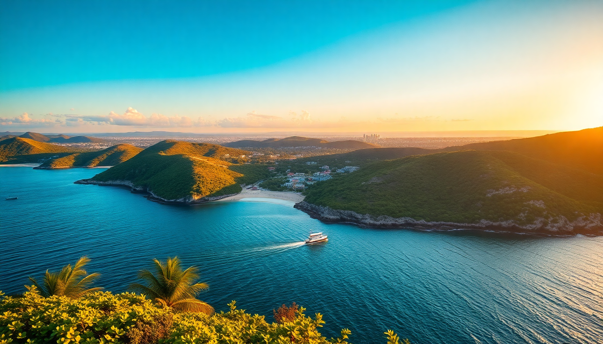

Best Time to Visit Mexico: Month-by-Month Guide for 2025

I’ve been to Mexico four times in the last three years, and every trip taught me something new about timing. One wrong month in Cancun means sargassum seaweed up to your knees. Pick the wrong week in Mexico City and you’re dodging rain every afternoon. Here’s the month-by-month breakdown for 2025 so you can book with confidence.
What’s the weather like in Cancun, Mexico City, and Oaxaca each month?
Cancun runs on two seasons: dry (November–April) and wet (May–October). The dry season is peak tourist time—blue skies, low humidity, and water temps around 80°F. The wet season brings afternoon thunderstorms and higher humidity, but also cheaper flights and emptier beaches.
Mexico City has a mild year-round climate thanks to its 7,300-foot elevation. The rainy season runs May through October, with heavy but short downpours usually after 3 PM. Winter nights (December–February) can drop to 40°F—pack a jacket.
Oaxaca is hot and dry from November to April, with temperatures hitting the mid-90s in the central valleys. The rainy season (May–October) cools things down but can make rural roads muddy. Guelaguetza festival in July brings huge crowds and higher prices.
- Cancun: Best beach weather is December–April. Avoid August–October for hurricane risk.
- Mexico City: Clear skies from November–April. Rain is manageable May–October if you bring an umbrella.
- Oaxaca: Dry and sunny November–April. July is packed for the Guelaguetza festival.
When is the best time for cheap flights and fewer crowds?
If you’re budget-conscious, aim for the shoulder months: May and October. Flights from the US to Cancun drop by 30–40% compared to December. I flew into Cancun in early May 2023 for $280 round-trip from Chicago. The beaches were quiet, and the sargassum hadn’t arrived yet.
In Mexico City, September is the sweet spot. Kids are back in school, and the rainy season keeps tourists away. I stayed at Hotel Marlowe near the Zócalo for $65 a night in September 2024. The rain started at 4 PM sharp, but mornings were clear for exploring.
Oaxaca’s cheapest months are June and September. The Quinta Real Oaxaca—a converted convent—drops to under $150 a night in June. You’ll deal with some rain, but the streets are empty, and the mole at Casa Oaxaca doesn’t need a reservation.
- Cheapest flights: May, September, October for Cancun. September for Mexico City.
- Lowest hotel prices: June (Oaxaca), September (Mexico City), October (Cancun).
- Crowds: Avoid December 20–January 5 and Semana Santa (April 13–20, 2025).
Which months have the best festivals and events?
Mexico runs on festivals. Día de Muertos (November 1–2) is the big one. I spent it in Mexico City in 2023, and the Coyoacán neighborhood was alive with altars, marigolds, and face-painted locals. Book hotels six months ahead—Hotel Casa Blanca in Condesa fills up fast.
Oaxaca’s Guelaguetza (two Mondays in July) is a massive indigenous dance and music festival. The city doubles in size. I’d skip it unless you booked a room at Hotel Azul Oaxaca a year in advance. For a quieter cultural fix, try the Day of the Dead parade in Oaxaca instead—less chaotic, same vibes.
Cancun’s best event is Carnaval (February–March). The hotel zone parties hard, but I prefer the smaller celebrations in Puerto Morelos, 20 minutes south. No cover charges, better tacos.
- Día de Muertos: November 1–2 in Mexico City and Oaxaca. Book by July.
- Guelaguetza: July 21 and 28, 2025 in Oaxaca. Overpriced hotels, but incredible performances.
- Carnaval: February 28–March 4, 2025 in Cancun. Head to Puerto Morelos for a local vibe.
When should I avoid Cancun for sargassum seaweed?
Sargassum is the bane of Cancun summers. It starts washing up in April, peaks from June to August, and fades by October. I made the mistake of visiting in July 2022—the beach at Hotel Zone kilometer 9 was a brown, smelly mess. The hotel staff raked it daily, but you couldn’t swim without bumping into clumps.
The clear-water months are December through March. If you’re stuck with a summer trip, head to Isla Mujeres or Cozumel—the seaweed hits the mainland coast harder. I took the ferry from Puerto Juárez to Isla Mujeres in July 2023, and the east side beaches were clean.
- Clear water: December–March. April is a gamble.
- Peak sargassum: June–August. Avoid if beach swimming is your priority.
- Safe alternatives: Isla Mujeres (Playa Norte), Cozumel (Palancar Beach), or Tulum (Sian Ka’an Biosphere).
What’s the best time for hiking and outdoor activities?
Mexico City’s Desierto de los Leones national park is best from November to February—cool temps, no mud. I hiked the 8-mile loop in January 2024 and barely saw another soul. The pine forest smells like California.
Oaxaca’s Hierve el Agua petrified waterfalls are a must, but avoid the rainy season (June–September). The paths get slippery, and the pools turn cloudy. I went in February 2025—crystal-clear water, 70°F, and only five other visitors.
Cancun’s cenotes are year-round, but Cenote Ik Kil near Chichen Itza gets packed from March to May. Go at 8 AM sharp. I swam there in April 2023 and had it to myself for 20 minutes before the tour buses rolled in.
- Best hiking: November–February for Mexico City. December–April for Oaxaca.
- Cenote timing: Arrive at opening (usually 8 AM) to avoid crowds.
- Rainy season hazard: Trails at Hierve el Agua close after heavy storms. Check local Facebook groups.
FAQ
Is Mexico safe to visit in 2025? Yes, if you stick to tourist zones. I’ve walked alone at night in Condesa (Mexico City) and the Hotel Zone (Cancun) without issues. Avoid unlit areas in Oaxaca after 10 PM. Use official taxis from the airport—ADO buses are safer and cheaper for intercity travel. Check the US State Department’s travel advisories, but don’t overthink it.
Do I need a visa for Mexico? US, Canadian, UK, and EU passport holders don’t need a visa for tourism stays under 180 days. You’ll fill out an FMM form on arrival. Keep the stub—you hand it back when leaving. I lost mine once in Cancun and paid a $30 fine at the airport. Not a big deal, but annoying.
What’s the best month for whale watching in Mexico? December through March, on the Pacific coast. Head to Puerto Vallarta or Cabo San Lucas for humpback whales. I did a boat tour out of Puerto Vallarta in February 2024 and saw a mother and calf breach within 50 feet. Cancun doesn’t have whale watching—it’s all about the whale sharks (June–September) instead.
Conclusion
- Best overall weather: December–March for Cancun’s beaches and clear skies; November–February for Mexico City and Oaxaca’s outdoor activities.
- Cheapest travel: May and September for all three cities—fewer crowds, lower prices, but some rain.
- Avoid July and August in Cancun if you hate seaweed and humidity. Head to Oaxaca or Mexico City instead.
- Book Día de Muertos (November) by July—hotels in Mexico City and Oaxaca sell out six months ahead.
- For hiking and cenotes, go in January or February—cool, dry, and uncrowded.